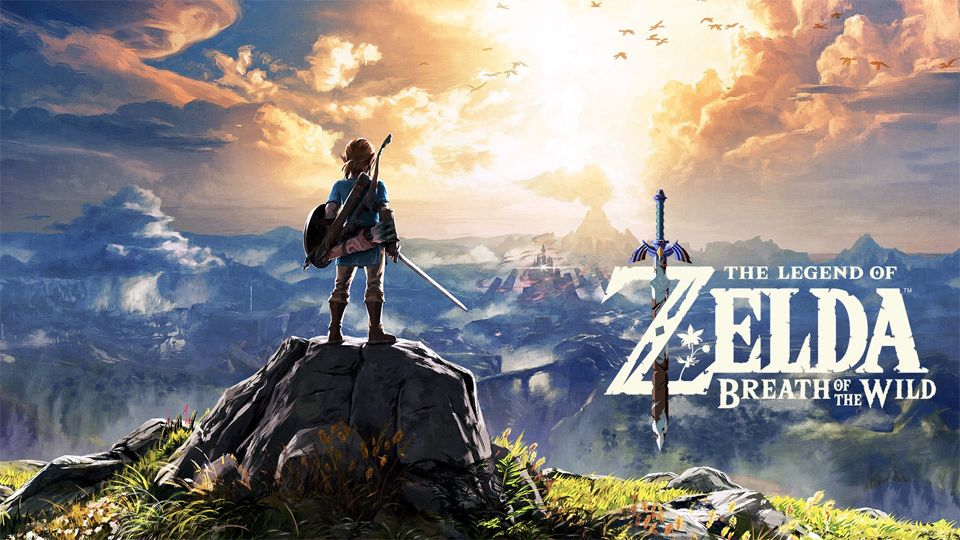

- 게임소개
- 줄거리
게임소개

닌텐도가 개발 배급한 오픈 월드 액션 어드벤처 게임으로,
본가 젤다의 전설 시리즈의 18번째 작품이다. Wii U와 닌텐도 스위치로 발매되었다.
공식 한글판 부제는 '브레스 오브 더 와일드'로 황혼의 공주 때와는 달리 한국어로 번역되지 않았다. 이와는 별개로 공식 번역 명칭 공개 이전부터 관용적으로 쓰던 '야생의 숨결'과 이를 줄여 쓴 '야숨'도 널리 사용된다. 영문판은 Breath of the Wild, 일본판은 이를 카타카나로 표기한 ブレス オブ ザ ワイルド로 쓰며 각각 BotW, ブレワイ라고 줄여쓴다.